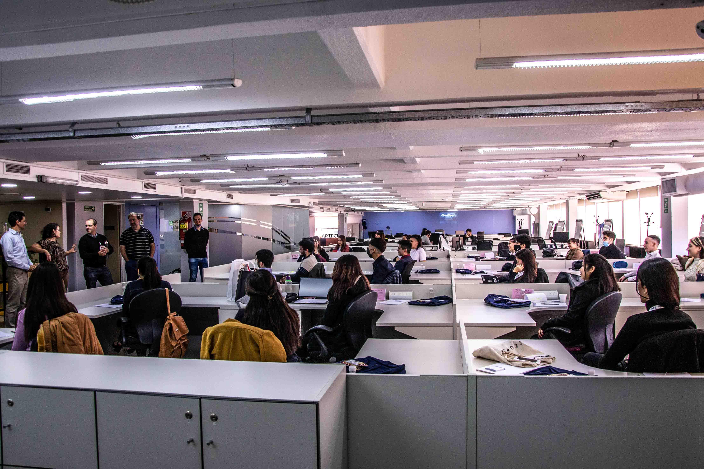
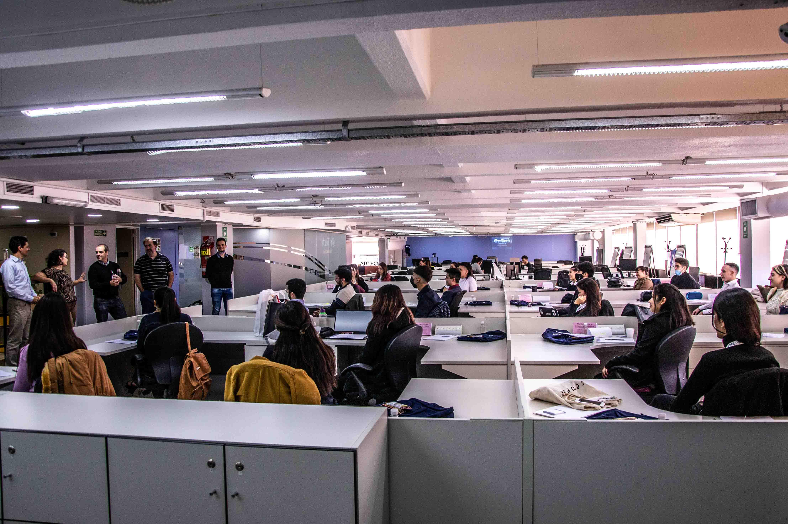
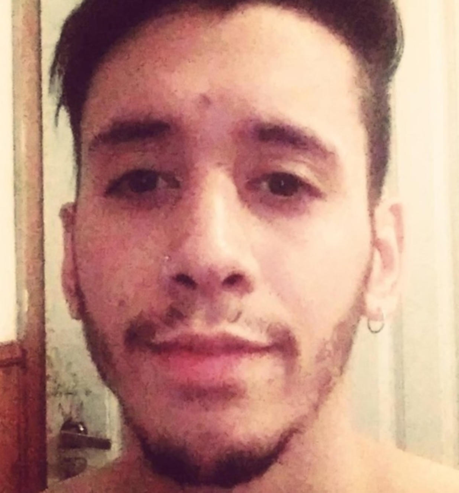

”Si quieres quitarle el hambre a un hombre, dale un pez;
Pero si quieres que no vuelva a tener hambre, enseñale a pescar.”


Empresas que acompañan el proyecto...

 



Experiencias Pescar
-
 Nayla Bechara @NaylaBechara
Nayla Bechara @NaylaBechara -
 Belen Jessikowski @BelenJessikowski
Belen Jessikowski @BelenJessikowskiEl curso de Pescar “paths to the future” fue un reto que me propuse cuando estaba esperando que abran inscripciones a la universidad. Supuse que sería un curso grabado gratuito como muchos otros a los que me había anotado ya antes. Pero la formación laboral, personal y hasta la formación “social” que tuvimos fue inigualable.
Los proyectos en equipo son muy enriquecedores, y por suerte nuestro equipo de 25 personas está lleno de gente muy compasiva y con ganas de ayudarse entre sí.
Es un curso que te vuela la cabeza, te introduce a gente que te inspira y conocimientos que ni sabias que existian. Es un curso que puede llegar a marcar un antes y un después. -
Ezequiel Villalba @EzequielVillalba
En el curso de Pescar aprendí muchas cosas, no solo habilidades técnicas, sino también fui ejercitando habilidades blandas las cuales son importantísimas para la conformación de un buen grupo para el trabajo y para la vida en general.
Yo esperaba un curso con clases pregrabadas y me encontré con un mundo de oportunidades y gente dispuesta a darme una mano para cumplir con mis metas. -
 Iván Caravajal @IvánCaravajal
Iván Caravajal @IvánCaravajalHaber sido parte de Pescar para mi fue una oportunidad y experiencia increíble. Durante esta etapa conocí a personas excelentes que formaron parte de este camino repleto de aprendizaje. Rodeado de grandes profesionales y compañeros me sentí realmente motivado de dar siempre lo mejor de mí. Nunca imaginé que una capacitación iba a significar un cambio tan rotundo en mi vida, gracias a Pescar aprendí valores, conocimientos y todo lo necesario para poder desenvolverme lo mejor posible tanto a nivel personal como laboral. Agradezco inconmensurablemente a todo el equipo de Pescar, J.P.Morgan y Artech por brindarnos todo lo necesario para poder disfrutar de esta experiencia al máximo.
-
 Mauro Benitez @MauroBenitez
Mauro Benitez @MauroBenitezFue algo genial! Conocer gente enfocada a los mismos resultados, con motivación y energía me encantó. Muchos conocimientos tanto técnicos como en softskills me ayudaron en mi día a día para crecer tanto de manera personal como profesional. Obtuve mi primer empleo IT gracias a la Fundación y les estoy totalmente agradecido. Algo que no voy a olvidar nunca, es a seguir aprendiendo de lo aprendido.
-
 Gerónimo Riesco @GeronimoRiesco
Gerónimo Riesco @GeronimoRiescoDisfruté mucho ser parte de Pescar, por todo, por la experiencias compartidas, por los compañeros que conocí y que fueron parte del camino recorrido y por los profesionales y líderes que me enseñaron y guiaron en mi camino de aprendizaje. Entre ellos destaco a la Lic. Paola Tripicchio que nos acompañó y guió en todo momento alentándonos a esforzarnos, a perseverar y continuar siempre, dando de nosotros lo mejor.
Siento que con Pescar crecí personal y profesionalmente. Estoy muy agradecido por la gran oportunidad que tuve.
Sin dudas gran parte de mi vida cambió después de entrar a esta beca. Tuve la suerte de entrar a Pescar con un equipo increíble, y tener el apoyo de profesionales que nos ayudaron muchísimo a nuestro desarrollo personal y técnico. Es súper motivante estar rodeada de personas con las mismas ganas de aprender y crecer. Nuestra orientadora, Paola Tripicchio, siempre se esforzó en darnos todas las herramientas para crecer, ayudar a autoconocernos, saber reconocer nuestras fortalezas y detectar nuestros puntos débiles para trabajarlos. Estoy muy agradecida con su enorme dedicación y la de todo el equipo de Pescar.